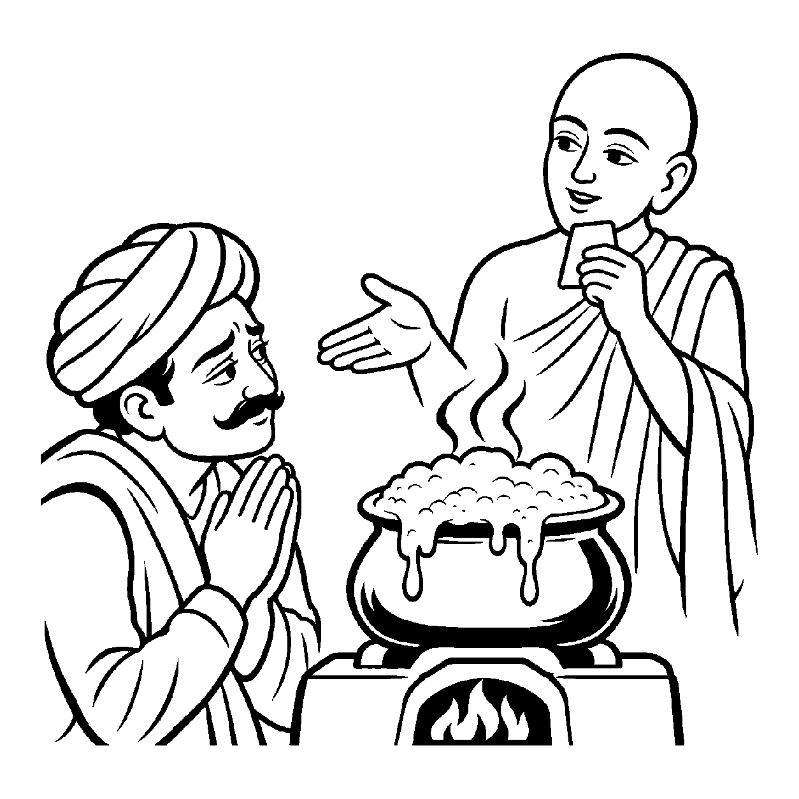

જ્યારે દૂધને અગ્નિ પર મૂકવામાં આવે છે, ત્યારે તે ઉકળીને તપેલીની બહાર છલકાવા લાગે છે. સફેદ ફીણ ઊભરાઈને ચૂલા પર પડે છે. તે ફીણ દૂધનું જ છે, છતાં તે બાહ્ય ઉષ્માની ઉપાધિથી એટલું ઉત્તેજિત થઈ ગયું છે કે દૂધની શાંતિ ખોવાઈ ગઈ છે. તેવી જ રીતે સંસારી આત્મા જ્યારે તીવ્ર મોહનીય કર્મના ઉદયથી પ્રકોપ પામે છે, ત્યારે અંતરંગની શાંતિ હણાઈને બહાર મુખ, આંખો અને વાણી પર લાલચોળ ક્રોધ, કઠોર અહંકાર, કપટી માયા કે લોભરૂપ સ્થૂળ વ્યક્ત વિકારો છલકાવા લાગે છે. આત્માના આવા પ્રત્યક્ષ દેખાતા સ્થૂળ વિભાવોને ગ્રહણ કરવો તે 'ઉપચરિત અશુદ્ધ સદ્ભૂત વ્યવહાર' કહેવાય છે.
આ નય સદ્ભૂત છે કારણ કે ક્રોધ જીવની જ પરિણતિમાં થાય છે (પુદ્ગલમાં નહીં). તે અશુદ્ધ છે કારણ કે તે મોહજન્ય છે. અને તે 'ઉપચરિત' એટલા માટે છે કારણ કે આ ક્રોધ આત્માનો સહજ સ્વભાવ નથી, પરંતુ બાહ્ય નિમિત્તો (શત્રુ, અપમાન, સંપત્તિ)ની ઉપાધિ સાથે ઉપચાર પામીને અતિ સ્થૂળ રૂપે પ્રગટ થયો છે.
જો સ્થૂળ ક્રોધને પણ જીવ પોતાનો ન માને, તો તે ક્યારેય સંયમ ન પાળી શકે. આ નય સાધકને બાહ્ય કષાયો પર લગામ કસવાનું પ્રથમ શિસ્ત શીખવે છે.
ક્રોધ માન છલકાય જ્યાં, વાણી મુખ પર ઘોર;
ઉપચરિત અશુદ્ધ વ્યવહારથી, પરખાય વિકાર જોર.
સ્થૂળ કષાયો ત્યાગતાં, શમે સંસારનો તાપ;
શાંતિ ધરીને અંતરે, ધોવાય સઘળાં પાપ.
બાહ્ય વાણી અને વર્તનમાં દેખાતા સ્થૂળ ક્રોધાદિ વિકારો પર સંયમ રાખી, સદાચારનું ચુસ્ત પાલન કરવું.

ધર્મક્ષેત્રના એક વ્યાપારી ધનંજયભાઈ ધર્મક્રિયાઓમાં આગળ પડતા હતા. છતાં તેમની મુશ્કેલી એ હતી કે વેપારમાં જો કોઈ ગ્રાહક કે મુનીમ નાની ભૂલ કરે, તો તેઓ દુકાન ગજવી મૂકતા! તેમની આંખો લાલ થઈ જતી અને મુખમાંથી અંગારા વરસવા લાગતા. લોકો કહેતા કે "શેઠજી ખૂબ ક્રોધી છે." સાંજે શાંત થતાં ધનંજયભાઈ પસ્તાવો કરતા કે "હું આવો ક્રોધ કેમ કરી બેસું છું? શાસ્ત્રોમાં વાંચ્યું છે કે આત્મા તો સદા શીતળ છે, તો પછી મારી આ સ્થૂળ ઉગ્રતા શું છે? શું આ ક્રોધ મારા આત્માનો ભાગ છે?" આ પ્રશ્ને તેમને ભારે અશાંત કરી મૂક્યા હતા.
તે જ સમયે સંઘના એક સમર્થ મુનિરાજ તેમના ઘેર ગોચરી વહોરવા પધાર્યા. તે સમયે રસોડામાં દૂધ ઉકળીને ચૂલા પર છલકાઈ રહ્યું હતું. મુનિશ્રીએ ધનંજયભાઈને કહ્યું, "શેઠજી, આ દૂધને જુઓ. દૂધ મૂળ સ્વભાવે શીતળ અને મધુર છે, પરંતુ અગ્નિની ઉપાધિ મળતાં તે કેવું ઉકળીને બહાર છલકાય છે! ઉપચરિત અશુદ્ધ સદ્ભૂત વ્યવહારનય આ જ બતાવે છે! તમારો આત્મા મૂળ સ્વભાવે શાંત છે, પરંતુ જ્યારે ક્રોધનો ઉદય આવે છે ત્યારે તમારા ચિત્તમાં ક્ષોભ જાગે છે અને તે વાણી તથા આંખો દ્વારા બહાર છલકાઈ ઊઠે છે! આ સ્થૂળ ક્રોધ પણ વર્તમાનમાં તમારા જ આત્માની પરિણતિ છે. તેને ઉપચાર ગણીને ઉપેક્ષા ન કરો. જેમ અગ્નિ મંદ કરતાં દૂધ શાંત થઈ જાય છે, તેમ ક્ષમાનો શીતળ જળ છાંટીને તમારા ક્રોધાગ્નિને શાંત કરો!" મુનિશ્રીના આ દ્રષ્ટાંતનું પાન કરતાં જ ધનંજયભાઈનો વિવેક જાગી ઊઠ્યો. તેમણે પોતાની ક્રોધિત વાણી પર નિયંત્રણ રાખવાનો દૃઢ સંકલ્પ કર્યો અને જીવનમાં ક્ષમાભાવ કેળવ્યો.
જો આ નયને એકાંત સત્ય માની લેવામાં આવે, તો જીવ કાયમ માટે ક્રોધી અને પાપી જ ઠરી જાય છે અને તેનો મૂળ નિર્મળ સ્વભાવ ભૂલાઈ જાય છે. આવી એકાંત જડતાથી જીવ વર્તમાન વ્યવહારિક સાધના અને કર્તવ્યોની ઉપેક્ષા કરી બેસે છે અને ક્રમિક પરિણામોને સુધાર્યા વિના અકાળે પૂર્ણતાના મિથ્યા સંતોષમાં રાચે છે.
આ નય જ્યારે શુદ્ધ સ્વભાવ સાથે સમન્વય પામે છે, ત્યારે સાધક સ્થૂળ ક્રોધાદિ કષાયોને ઓળખીને ક્ષમા, નમ્રતા અને સંતોષ દ્વારા તેમને શાંત કરી પરમ પવિત્રતા સાધે છે.